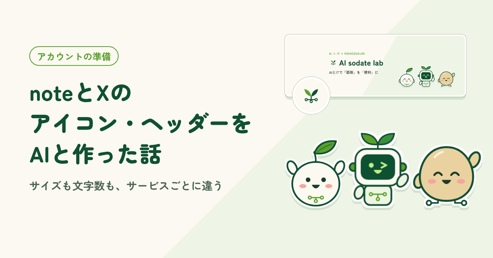
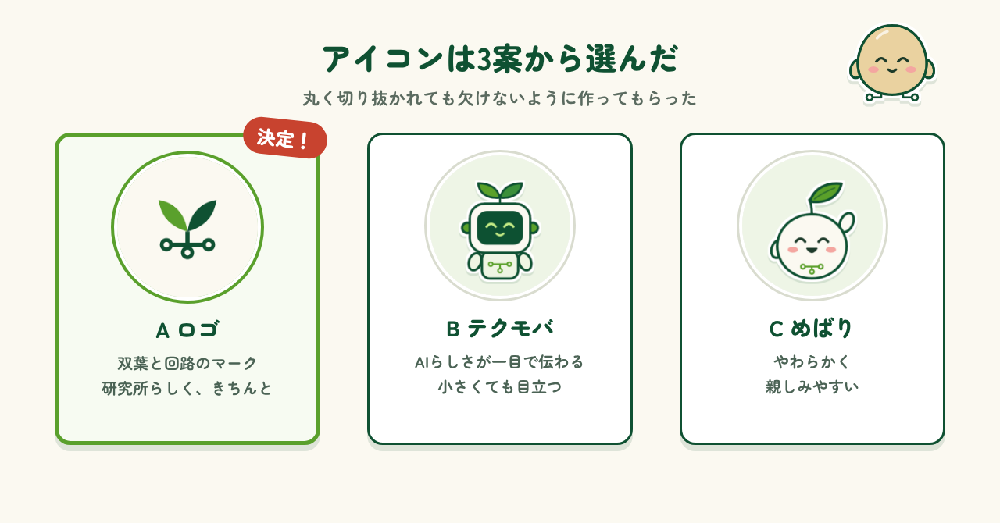
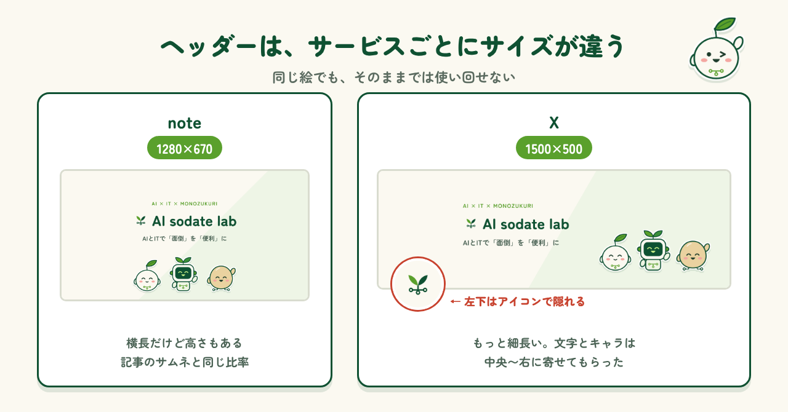
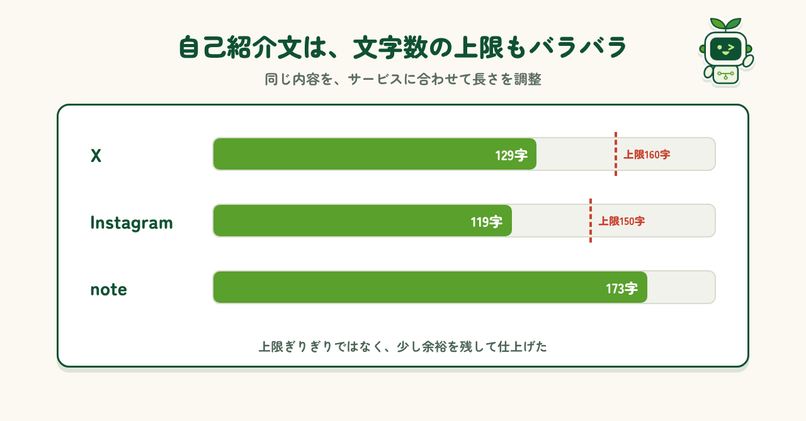
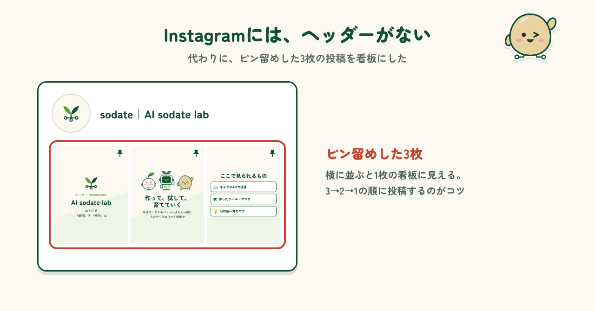

2026.11.02 公開
noteとXのアイコン・ヘッダーをAIと作った話
顔を出さずに発信を始めるために、アイコン・ヘッダー・自己紹介文をAIと一緒に作りました。サービスごとの違いで困ったところも紹介します。

はじめに
作ったものや気づきを発信するために、note・X・Instagramの3つを始めることにしました。そこで最初に悩んだのが、アカウントの「見た目」です。私は顔や本名を出さずに活動しているので、写真をアイコンにすることはできません。かといって、絵を描くのも得意ではありません。そこで、アイコンやヘッダー画像、自己紹介文まで、AIと相談しながら作ることにしました。この記事では、そのときに考えたことや、やってみて分かったことを紹介します。
アイコンは3案から選んだ
まずはアイコンです。AIにイメージを伝えると、サイトと同じ双葉と回路のロゴ、ロボットのテクモバ、芽の子のめばりの3案を作ってくれました。どれも、丸く切り抜かれても欠けないように作られています。こういうのって、ゼロから考えると本当に迷うんですよね。叩き台を出してもらえるのは、とても助かりました。3つを並べて見比べ、研究所らしくきちんとした印象のロゴに決定。3つのサービスすべてで、同じアイコンを使うことにしました。

ヘッダーはサービスごとにサイズが違う
次はヘッダー画像です。作り始めて驚いたのが、サービスごとにサイズが違うことでした。noteは1280×670、Xは1500×500と、Xのほうがずっと細長い形です。しかもXでは、ヘッダーの左下がアイコンで隠れてしまいます。そこでAIに、文字とキャラクターを中央から右に寄せて作ってもらいました。同じ絵でもそのままでは使い回せないとは。そこまで気を付けないといけないものなんだな、と思いました。

自己紹介文もAIと作った
ヘッダーと同じく、自己紹介文もサービスごとに文字数の上限が違います。Xは160字まで、Instagramは150字までです。伝えたい内容は同じでも、長さはサービスに合わせて変えなければなりません。この微妙な文字数の調整が、正直いちばん面倒でした。そこで、noteに載せる173字の文章をもとに、AIに短くしてもらいました。Xは129字、Instagramは119字です。上限ぎりぎりにせず、少し余裕を残しておくと、あとで一言足したいときにも困りません。

Instagramにはヘッダーがない
最後に困ったのがInstagramです。Instagramには、noteやXのようなヘッダー画像の欄がありません。AIに相談すると、プロフィールの上に固定（ピン留め）できる投稿3枚を、ヘッダーの代わりにする案を出してくれました。1枚目はロゴ、2枚目は3体のキャラクター、3枚目は「ここで見られるもの」。横に並ぶと、1枚の看板のように見えます。投稿は3→2→1の順にするのがコツです。これで、Instagramもほかのサービスと同じ雰囲気にそろいました。

まとめ
アイコン、ヘッダー、自己紹介文と、アカウントの準備は意外と面倒です。サービスごとにサイズや文字数の決まりが違い、一つずつ合わせていく必要があります。それでも、AIが叩き台を考えてくれたおかげで、相当ラクができました。色やキャラクターをどのサービスでもそろえておくと、どこで見ても「同じ人だ」と分かってもらえます。これからアカウントを作る人は、まずAIに叩き台を頼んでみてください。
制作メモ
段落の構成と文章の下書きはAI（Claude）と作り、各段落に自分の感想を入れて、1段落ずつ確認・修正しました。図もAIと一緒に作っています。